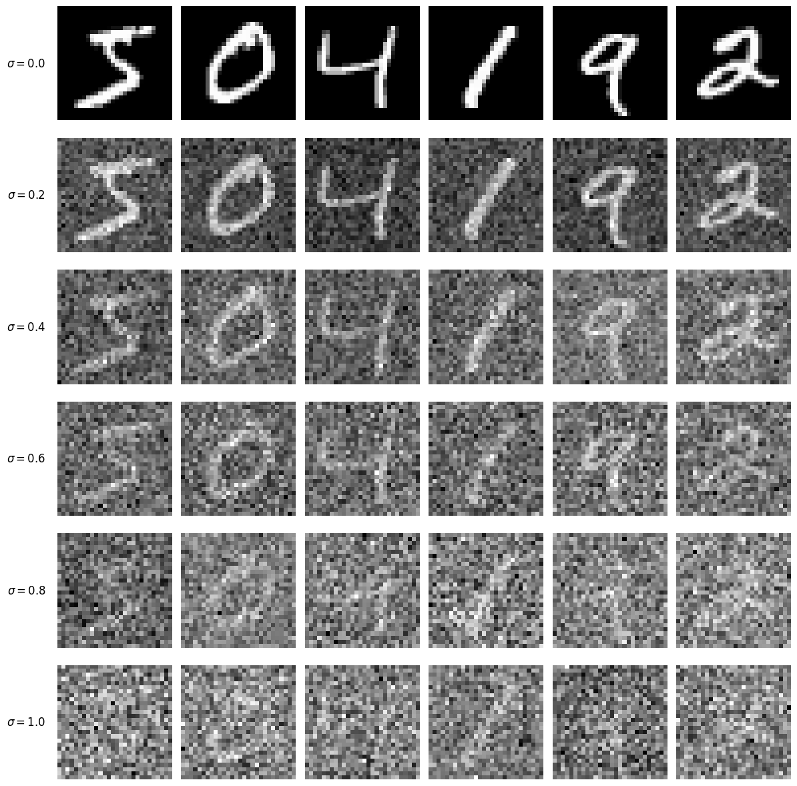
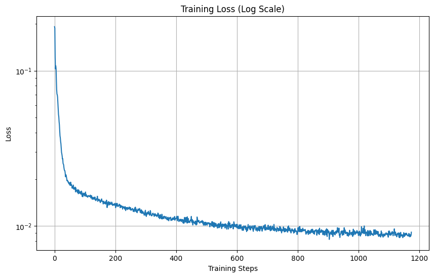
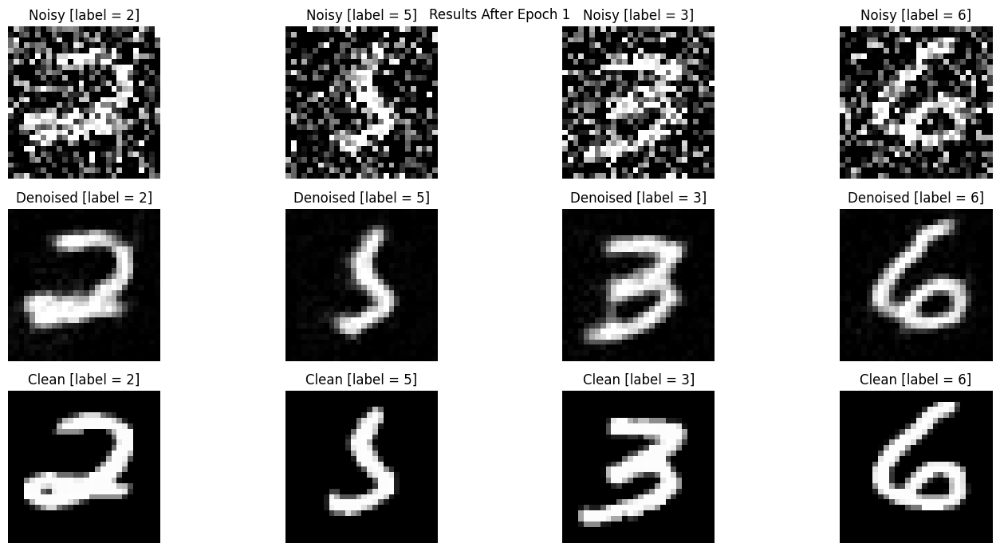
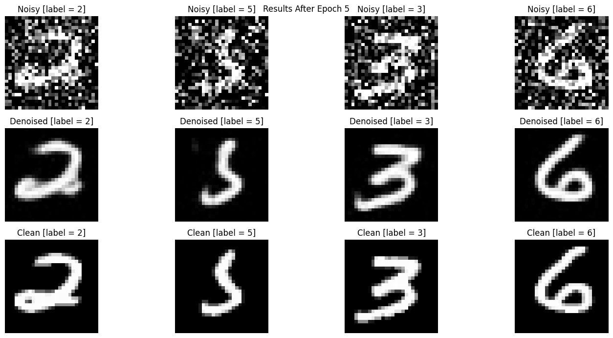
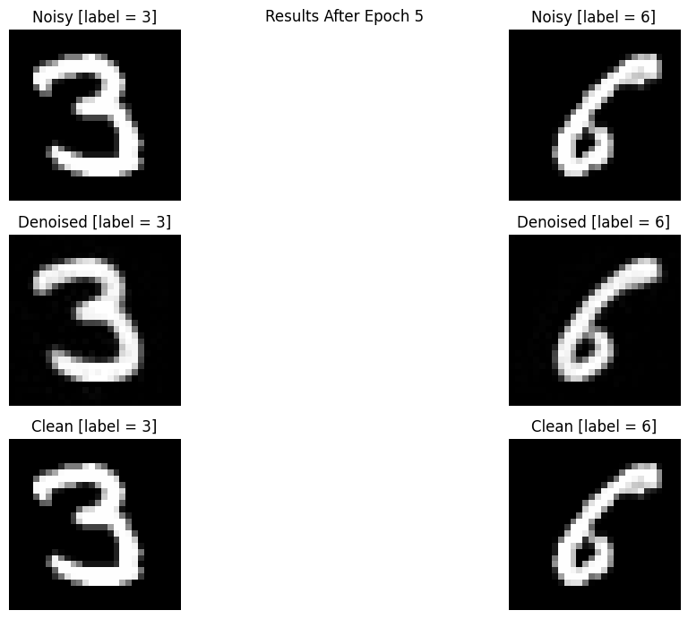
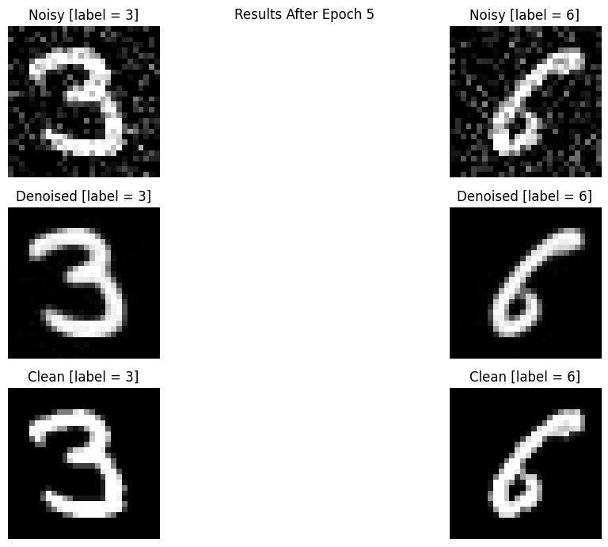
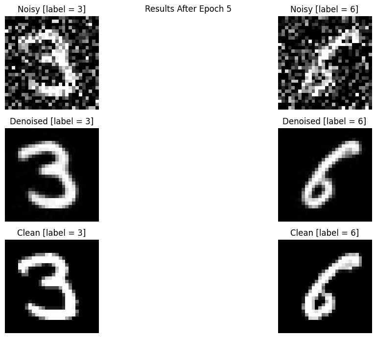
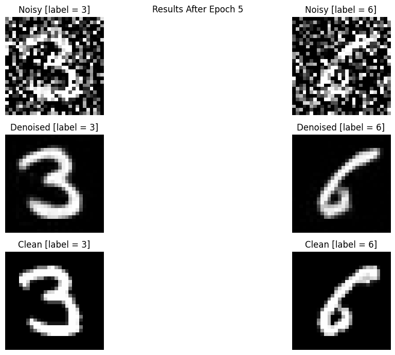
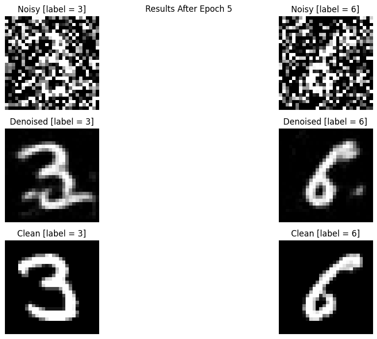
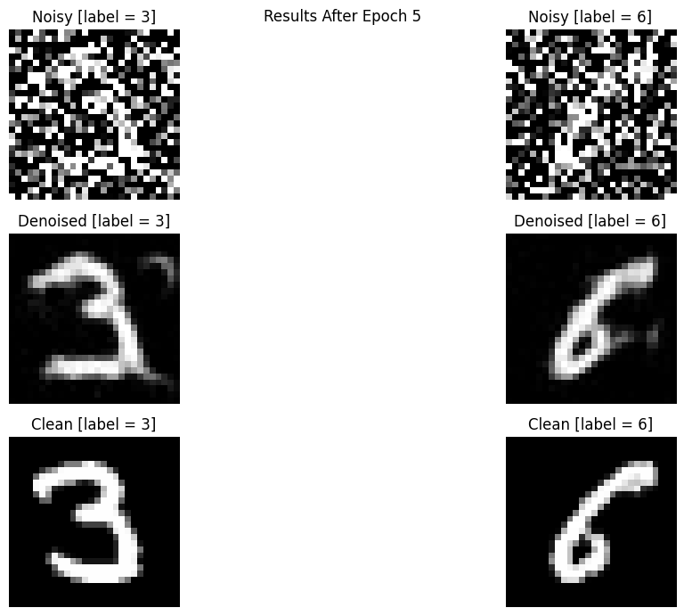

Below is a visualization of the noising process for some sample images from
the training set, taken over values \( \sigma \in [0.0,0.2,0.6,0.8,1.0]\). The noising
process is simply
\[z \gets x + \sigma \varepsilon \]
where \(x \) is the clean image, \( \sigma \) is the noise level, and \( \varepsilon \sim N(0,I) \).

Training loss curve
Consider training the model on noisy images \( z \) with \( \sigma = 0.5 \) as the fixed noise level.
With parameters num_epochs = 5 , batch_size = 256 , D=128,
num_ts = 300, beta1 = 0.0001, beta2 = 0.02 , and for gradient descent
thresh = 0.02. The training log-loss curve is shown below. As we see,
after about 800 iterations, the loss goes down at a slow, constant, linear rate, after
an initially fast decay.

Denoising Attempt after 1 Epoch
We take some sample digits from the testing set, add noise at level \( \sigma = 0..5 \),
and then one-step denoise (on the model after 1 epoch is run) to produce the results below.

Epoch 5 Results
We take some sample digits from the testing set, add noise at level \( \sigma = 0..5 \),
and then one-step denoise (on the model after 5 epoch is run) to produce the results below. Notice that
some of the extra edge artifacts that make identifying the digit difficult are now gone by the time
the model has been trained till epoch = 5 .

OOD Testing
To test our model further, we use out-of-distribution testing. Specifically, given a test image \(x \), we noise it
at levels \( \sigma \in [0.0,0.2,0.6,0.8,1.0]\) and then apply our model to denoisify. For levels lower than what we trained on,
obviously the denoising looks great. However, denoising more confuses the model and results in imprecise denoising (too many artifacts).

sigma = 0.0

sigma = 0.2

sigma = 0.4

sigma = 0.6

sigma = 0.8

sigma = 1.0